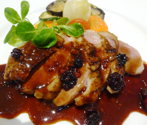

鴨肉のグリル・ベリーベリーソース
- 調理時間：30 分
- （一人当たり）
- カロリー：453kcal
- たんぱく質：16.3g
- 脂質：30.3g
- 炭水化物：25.7g
- 塩分：2.4g


＜2人分＞
- 鴨肉
- 200g
- 塩、コショウ
- 各少々
- 付け合わせの野菜
- お好みで
- ・ベリー3種
（今回はブルーベリー、ラズベリー、ブラックベリー） - 合わせて20～30粒くらい
- ・クコの実（水で戻す）
- 小さじ1
- ・松の実
- 小さじ1
- ・バルサミコ酢
- 大さじ2
- ・ウスターソース
- 大さじ2
- ・トマトケチャップ
- 大さじ2
A


- 鴨肉の脂身側に格子状に切れ目を入れ、塩、こしょうを振る。
中火で熱したフライパンでじっくり焼き、焼き色がついたらひっくり返して両面焼く。
鴨肉を一旦とりだし、1ｃｍ幅にスライスする。 - 鴨肉をソテーしたフライパンにＡの材料を全て入れて、トロッとするまで煮詰める。
- スライスした鴨肉をフライパンにもどし、ソースと絡めて出来上がり。
お好みで温野菜を添えていただく。
鴨肉のグリル・ベリーベリーソース
「カモ」は古くから食用とされてきた鳥で、フランスやイタリアでも多く用いられる食材です。日本では、鴨汁や鴨蕎麦などの料理で用いられますが、私たちが日ごろ口にしている鴨のほとんどは「アイガモ」といえます。アイガモは、野生のカモと、家禽のアヒルを交配した鳥類です。
鴨肉はニワトリよりも脂質が多く含まれます。その脂肪酸も動物性食品でありながら、不飽和脂肪酸が多く、なかでもリノール酸が豊富です。脂質が多いため、濃厚な味わいになりますが、フルーツをつかったソースとは甘味と酸味のバランスがよく、見た目も華やかになりますのでおススメです。